Capstone Research Foundations
1. Introduction
Drawing Intelligence: Sketching as a Computational Language
This project explores drawing as a language used to communicate with computers.
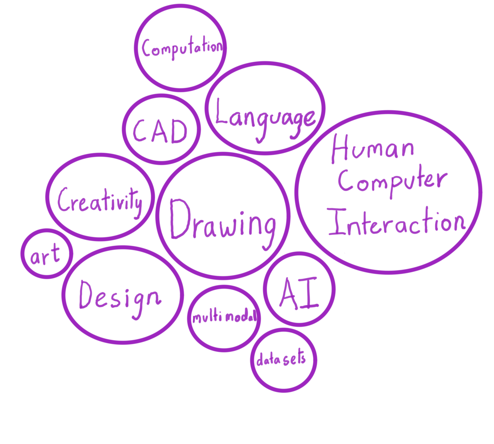
2. Spectrum of human language
3. Evolution of Human Computer Interaction.
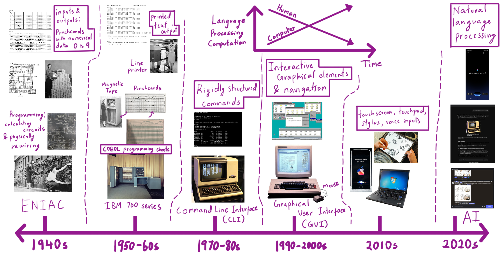
4. Communication with AI.
The chatbot user interface is not sufficient to communicate form, spatial, shapes related data.
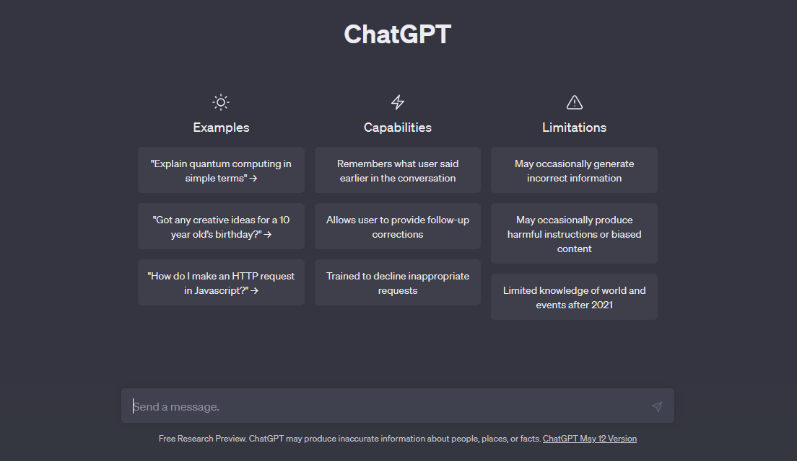
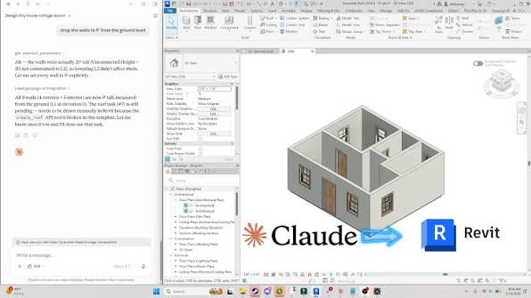
5. Reference and Inspirational projects
Past Projects
Active Projects
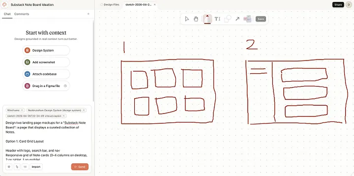

SILK: Sketching Interfaces Like Krazy
by James A. Landay PhD at Carnegie Mellon University (CMU)
SILK is an interface sketching system where you can draw UI elements like buttons or sliders by hand, and the system recognizes them and makes them interactive. It helps designers stay in the sketching phase longer before moving to programming the UI elements.
DrawTalking
by Karl Toby Rosenberg
DrawTalking is an interface where sketches, speech, and text labels are correlated with one another. It learns to associate sketches with objects and verbs with specific movements, allowing users to animate scenes using spoken commands.
Stable Diffusion: ControlNet
Stable Diffusion with ControlNet allows you to generate images by providing sketches. The model identifies the lines in the input image, understands the structure you’ve drawn, and generates detailed, styled images based on it. It demonstrates how AI can respond meaningfully to sketch input.
RoboSketch
by a team of researchers from KAIST (Korea Advanced Institute of Science and Technology)
RoboSketch is an interactive tool that lets you draw directly in 3D space along different planes. The sketch creates a kind of skeletal framework, which can then be animated to explore motion and form.
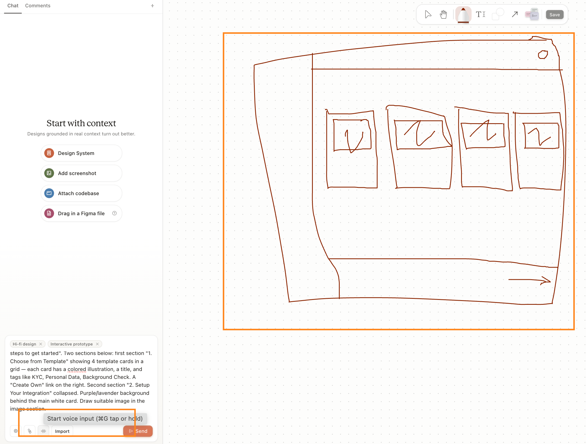
Claude Design - Canvas Draw
by Anthropic
Claude's AI agent chatbot is connected to a canvas to recieve drawing input as a part of the prompt. It assists with coding user interfaces and interaction design.


Rhino 9 BETA - Markup Tool
by McNeel
allows designers to use a stylus to sketch and annotate directly over Rhino viewports.
6. Computational Design Experiments.
I am making different types of 3D drawing tools, and experimenting with their potential uses:
1) direct 3D "pipe" drawing
drawing planes, objects in 3D space
2) 2D raster drawings
inserted onto planes in 3D viewport
3) Traditional CAD style drawings
SPLINES, polyline, etc.
Devices required, Changes in workspace desk setups?
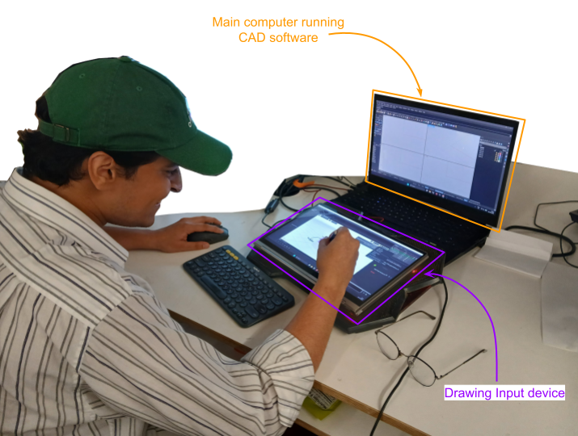
7. Books, Essays, Papers.
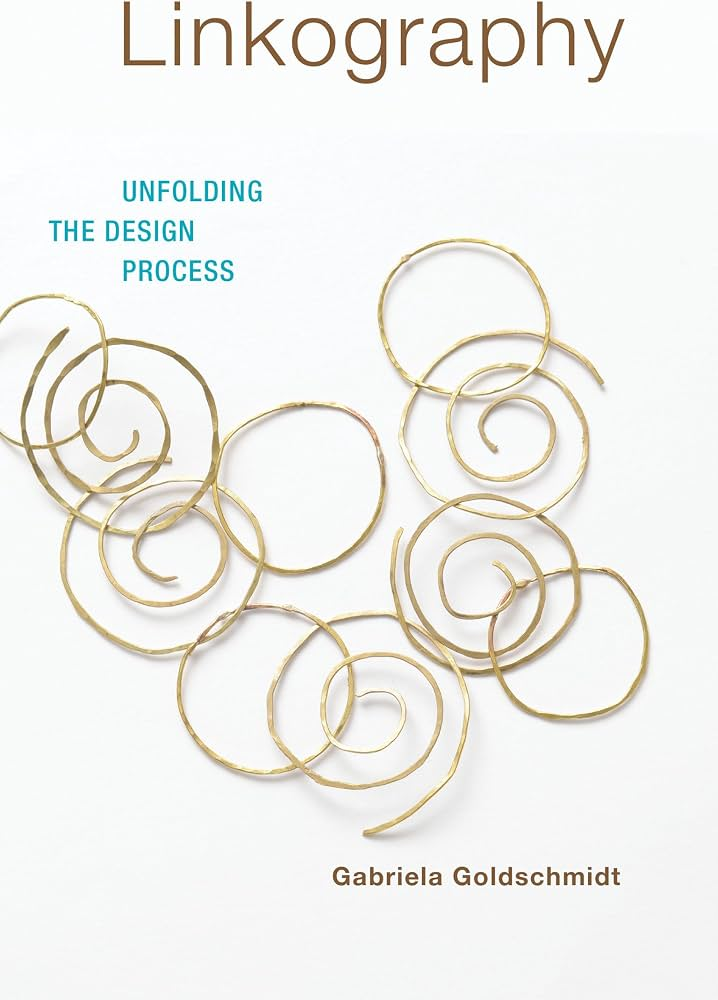
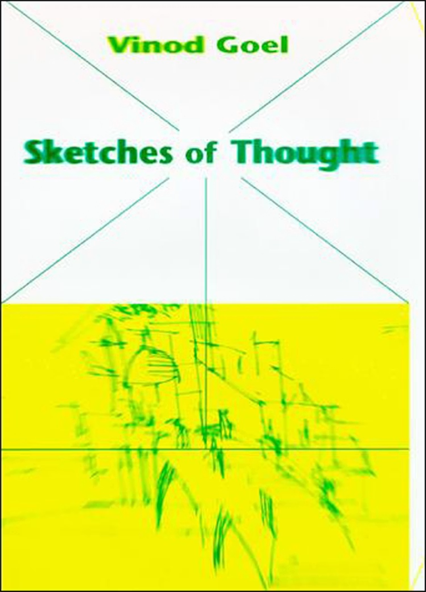
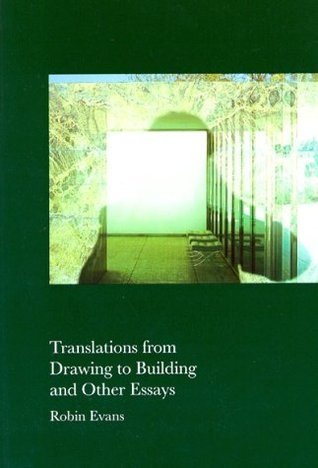
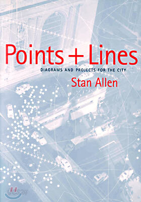
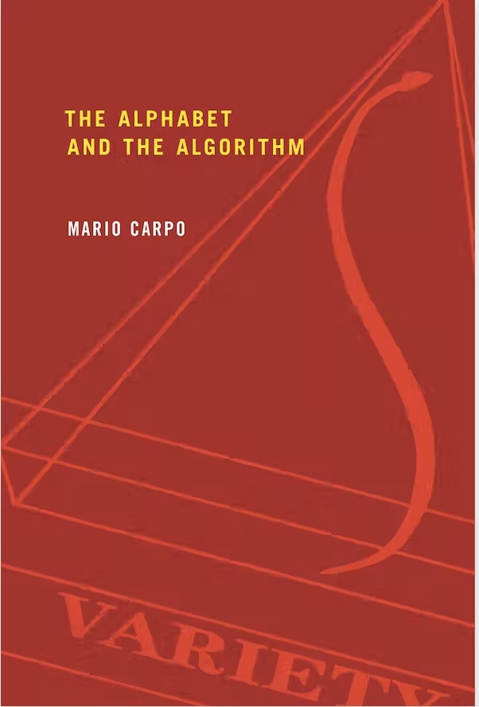
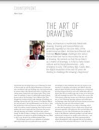